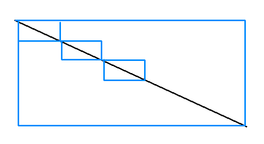

In my project I noticed that if I have a big scene with a lot of bodies (100’s) a raycast from one end of the level to another becomes very expensive (in my case AI line of sight check).
I assume that the raycast implementation uses AABB to get all the bodies it needs to test against for intersection.
A possible way to optimize it is to segment the ray into several rays, so the sum of the volumes of the smaller AABBs is smaller than the single big AABB, so it will test against much less bodies.
In the case of returning the closest result, when a ray segment hits something there’s no need to test the rest of the segments.

Since it’s quite a general case (any big scene with many bodies), if I implement it would u accept a pull request?
EDIT:
I implemented it and in my case it more than doubled the game framerate, and the performance relation is non-linear.
Made a pull request:
github.com/urho3d/Urho3D/pull/1093